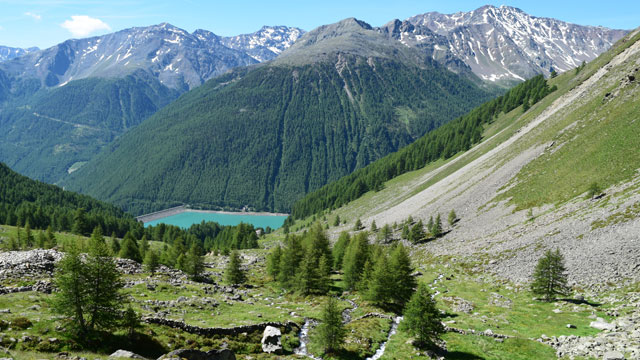
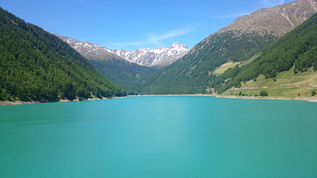

Day 6: Final sprint to Merano
Last day. We are still a short stage away from the reservoir in Vernagt, the finish line of our tour. We leave the Martin Busch Hut after a last hut breakfast and hike across the Austrian-Italian border to the Similaun Hut, the highest point of our trip.
We overcome a last sporty descent and walk in the best summer weather over South Tyrolean cow pastures to the reservoir in Vernagt.
We made it!
We cover the last stretch to Merano by train. We celebrate our great experience in a classic way with pizza and are already making our first plans for where to go next.
